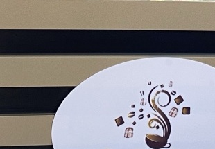
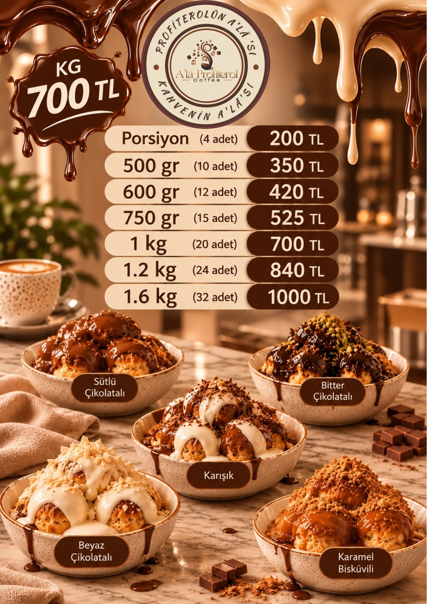
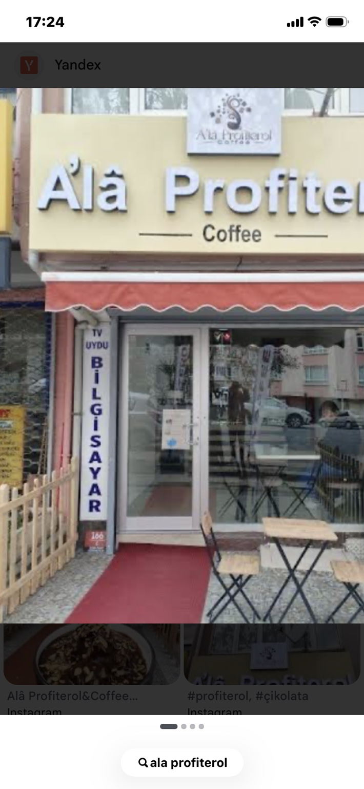
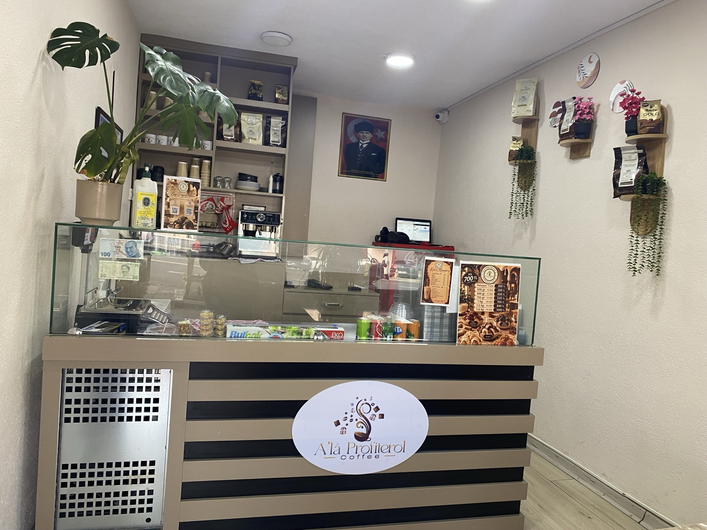
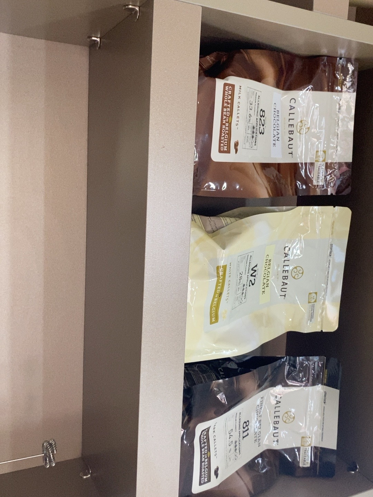
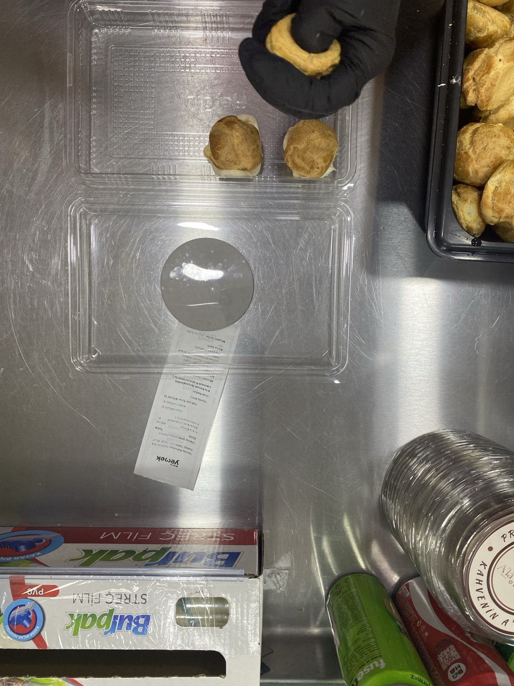

Un
Profiterol hamurunun temel malzemesi.

A’la ProfiterolCOFFEEHer lokmada mutluluk
Günlük taze olarak hazırlanan profiterollerimiz, çikolata ve kahve keyfiyle buluşuyor.
Lezzetleri keşfet →
Özenle seçilen malzemeler, her gün taze hazırlanan profiteroller.

Ürünlerimizde kullanılan çikolataları yakından tanıyın.
Not: Çeşitlere göre kullanım bilgileri işletme tarafından teyit edildiğinde bu açıklamalar kesinleştirilecektir.Profiterol hamurunun temel malzemesi.
Hamurun yapısını ve kıvamını oluşturur.
Krema ve tariflerimizin önemli bileşeni.
Hamura lezzet ve doku katar.
Sütlü, beyaz ve bitter seçenekleri.
Dolgun ve yumuşak iç dolgu.
A’la’nın özenle hazırlanan çikolatalı profiterol lezzetlerini keşfet.
Yumuşak iç kreması ve sütlü çikolata lezzeti.
Yoğun çikolata tadını sevenlere özel.
Beyaz çikolatanın kendine özgü lezzeti.
Beyaz ve sütlü çikolatanın bir araya geldiği lezzet.
Karamel bisküvi sosuyla farklı bir tatlı deneyimi.
Mekânımızdan ve günlük hazırlık sürecimizden görüntüler.



Gerçek ziyaretçi değerlendirmelerini Google işletme profilimizde inceleyebilirsiniz.
Profiterol · Kahve
Lezzet deneyimini paylaşan misafirlerimizin değerlendirmelerine göz atın.
Google yorumlarını görGoogle’daki güncel puan ve yorumlar doğrudan Google üzerinde görüntülenir.
Sevdiğin lezzetlere kullandığın sipariş platformundan ulaş.